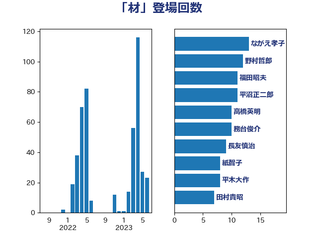

単語「材」

| ながえ孝子 | 無所属 | 13 回 |
| 野村哲郎 | 自由民主党 | 12 回 |
| 福田昭夫 | 立憲民主党 | 11 回 |
| 平沼正二郎 | 自由民主党 | 11 回 |
| 高橋英明 | 日本維新の会 | 10 回 |
| 務台俊介 | 自由民主党 | 10 回 |
| 長友慎治 | 国民民主党 | 9 回 |
| 紙智子 | 日本共産党 | 8 回 |
| 平木大作 | 公明党 | 8 回 |
| 田村貴昭 | 日本共産党 | 7 回 |
| 漆間譲司 | 日本維新の会 | 7 回 |
| 進藤金日子 | 自由民主党 | 6 回 |
| 清水貴之 | 日本維新の会 | 6 回 |
| 須藤元気 | 無所属 | 5 回 |
| 西村康稔 | 自由民主党 | 5 回 |
| 斉藤鉄夫 | 公明党 | 4 回 |
| 堀井巌 | 自由民主党 | 4 回 |
| 住吉寛紀 | 日本維新の会 | 4 回 |
| 青島健太 | 日本維新の会 | 3 回 |
| 鈴木義弘 | 国民民主党 | 3 回 |
| 足立敏之 | 自由民主党 | 3 回 |
| 渡辺猛之 | 自由民主党 | 3 回 |
| 浜野喜史 | 国民民主党 | 3 回 |
| 岸田文雄 | 自由民主党 | 3 回 |
| 山崎誠 | 立憲民主党 | 3 回 |
| 安江伸夫 | 公明党 | 3 回 |
| 吉田豊史 | 無所属 | 3 回 |
| 金子恵美 | 立憲民主党 | 2 回 |
| 遠藤良太 | 日本維新の会 | 2 回 |
| 近藤昭一 | 立憲民主党 | 2 回 |
| 西野太亮 | 自由民主党 | 2 回 |
| 笠井亮 | 日本共産党 | 2 回 |
| 竹詰仁 | 国民民主党 | 2 回 |
| 神谷裕 | 立憲民主党 | 2 回 |
| 池畑浩太朗 | 日本維新の会 | 2 回 |
| 日下正喜 | 公明党 | 2 回 |
| 小野田紀美 | 自由民主党 | 2 回 |
| 小宮山泰子 | 立憲民主党 | 2 回 |
| 北神圭朗 | 無所属 | 2 回 |
| 下野六太 | 公明党 | 2 回 |
| 高橋千鶴子 | 日本共産党 | 1 回 |
| 青木愛 | 立憲民主党 | 1 回 |
| 金城泰邦 | 公明党 | 1 回 |
| 近藤和也 | 立憲民主党 | 1 回 |
| 辻元清美 | 立憲民主党 | 1 回 |
| 谷田川元 | 立憲民主党 | 1 回 |
| 角田秀穂 | 公明党 | 1 回 |
| 若宮健嗣 | 自由民主党 | 1 回 |
| 舟山康江 | 国民民主党 | 1 回 |
| 簗和生 | 自由民主党 | 1 回 |
| 石井浩郎 | 自由民主党 | 1 回 |
| 矢倉克夫 | 公明党 | 1 回 |
| 田村智子 | 日本共産党 | 1 回 |
| 田村まみ | 国民民主党 | 1 回 |
| 田嶋要 | 立憲民主党 | 1 回 |
| 渡辺創 | 立憲民主党 | 1 回 |
| 浜田靖一 | 自由民主党 | 1 回 |
| 永岡桂子 | 自由民主党 | 1 回 |
| 水岡俊一 | 立憲民主党 | 1 回 |
| 梅村聡 | 日本維新の会 | 1 回 |
| 梅村みずほ | 日本維新の会 | 1 回 |
| 松本剛明 | 自由民主党 | 1 回 |
| 東国幹 | 自由民主党 | 1 回 |
| 杉田水脈 | 自由民主党 | 1 回 |
| 後藤茂之 | 自由民主党 | 1 回 |
| 庄子賢一 | 公明党 | 1 回 |
| 平山佐知子 | 無所属 | 1 回 |
| 岩渕友 | 日本共産党 | 1 回 |
| 山口壯 | 自由民主党 | 1 回 |
| 山井和則 | 立憲民主党 | 1 回 |
| 小林茂樹 | 自由民主党 | 1 回 |
| 寺田静 | 無所属 | 1 回 |
| 宮崎雅夫 | 自由民主党 | 1 回 |
| 室井邦彦 | 日本維新の会 | 1 回 |
| 太田房江 | 自由民主党 | 1 回 |
| 大岡敏孝 | 自由民主党 | 1 回 |
| 古川元久 | 国民民主党 | 1 回 |
| 伊藤渉 | 公明党 | 1 回 |
| 伊藤孝恵 | 国民民主党 | 1 回 |
| 五十嵐清 | 自由民主党 | 1 回 |
| 中野英幸 | 自由民主党 | 1 回 |
| 三木圭恵 | 日本維新の会 | 1 回 |